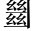

昭帝崩，昌邑王賀廢，宣帝初即位昭帝崩，無嗣，迎昌邑王賀為嗣。既至即位，行淫亂。大將軍霍光率群臣白太后廢之，迎武帝曾孫病已嗣昭帝后，是為宣帝。，路溫舒鉅鹿人，守廷尉史。上書，言宜尚德緩刑。其辭曰：
「臣聞齊有無知之禍，而桓公以興齊襄公無道，公子小白奔莒，子糾奔魯。及公孫無知弒襄公，小白自莒先入，得立，是為桓公。；晉有驪姬之難，而文公用伯晉獻公伐驪戎，得驪姬，愛幸之。姬譖三公子，申生自殺，重耳、夷吾出奔。後重耳入晉為文公。。近世趙王不終，諸呂作亂，而孝文為太宗高祖寵戚姬，生如意，封為趙王。帝崩，惠帝立，呂太后酖殺趙王。及惠帝崩，呂太后臨朝，諸呂專權，欲危劉氏。諸大臣謀共誅之，迎立代王，是為孝文帝，廟號太宗。。由是觀之，禍亂之作，將以開聖人也此句為下「昭天命」、「開至聖」張本。。故桓、文扶微興壞，尊文、武之業，澤加百姓，功潤諸侯，雖不及三王，天下歸仁焉承上說桓、文。。文帝永思至德，以承天心，崇仁義，省刑罰，通關樑，一遠近，敬賢如大賓，愛民如赤子，內恕情之所安，而施之於海內恕情，謂推己之心。，是以囹陵。圄語。空虛囹圄，獄名。，天下太平承上說文帝。。夫繼變化之後，必有異舊之恩，此賢聖所以昭天命也再下一斷，虛引「尚德緩刑」之旨。。往者，昭帝即世而無嗣，大臣憂戚，焦心合謀，皆以昌邑尊親，援而立之。然天不授命，淫亂其心，遂以自亡。深察禍變之故，乃皇天之所以開至聖也應上「將以開聖人」意。。故大將軍霍光。受命武帝，股肱漢國，披肝膽披，開也。，決大計，黜亡義廢昌邑。，立有德立宣帝。，輔天而行，然後宗廟以安，天下咸寧。
「臣聞《春秋》正即位，大一統而慎始也立宣帝。。陛下初登至尊，與天合符，宜改前世之失，正始受命之統，滌煩文，除民疾，存亡繼絕，以應天意主意要宣帝緩刑。緩刑即尚德也。以上卻不直說，只反覆極寫興廢之際，以深動之。。
「臣聞秦有十失，其一尚存，治獄之吏是也此句方入正意。。秦之時，羞文學一失。，好武勇二失。，賤仁義之士三失。，貴治獄之吏四失。，正言者謂之誹謗五失。，遏過者謂之妖言六失。，故盛服先生不用於世盛服，竭力以佩服也。○七失。，忠良切言皆鬱於胸八失。，譽諛之聲日滿於耳九失。，虛美薰心，實禍蔽塞十失。。此乃秦之所以亡天下也結過秦。。方今天下賴陛下恩厚，亡金革之危、飢寒之患，父子夫妻勠六。力安家勠力，併力也。，然太平未洽者，獄亂之也一闔。。夫獄者，天下之大命也一開。，死者不可復生，古絕字。者不可復屬祝。。《書》曰：「與其殺不辜，寧失不經辜，罪也。經，常也。謂法可以殺，可以無殺，殺之則恐陷於非辜，不殺之恐失於輕縱，然與其殺之而害彼之生，寧姑全之而自受失刑之責。。」今治獄吏則不然，上下相驅驅，逐也。，以刻為明，深者獲公名，平者多後患。故治獄之吏皆欲人死，非憎人也，自安之道在人之死慘痛之音。。是以死人之血流離於市，被刑之徒比肩而立，大辟闢。之計歲以萬數，此仁聖之所以傷也。太平之未洽，凡以此也又束應前。。夫人情安則樂生，痛則思死。棰楚之下，何求而不得棰楚，以杖鞭撲也。？故囚人不勝升。痛，則飾辭以視同示。之飾，假也。視，告也。；吏治者利其然，則指道以明之獄吏利其假辭以相告，為指引道理，以明其罪之實。；上奏畏卻，則鍛練而周內同「納」。之卻，退也。畏為上所卻退，則精熟周悉，致之法中。○三句盡酷吏折獄之情。。蓋奏當去聲。之成奏當，謂處當其罪而上奏也。，雖咎繇同皋陶。聽之，猶以為死有餘辜。何則？成練者眾，文致之罪明也成練，謂成其鍛練之辭。文致，文飾而致人罪也。○可見酷吏爰書，不可為據。。是以獄吏專為深刻，殘賊而亡極，媮偷。為一切媮，苟且也。一切，權時也。，不顧國患，此世之大賊也。故俗語曰：「畫地為獄，議不入；刻木為吏，期不對畫獄、木吏，尚不入、對，況真實乎？議，擬也。期，必也。。」此皆疾吏之風，悲痛之辭也。故天下之患，莫深於獄；敗法亂正，離親塞道，莫甚乎治獄之吏。此所謂一尚存者也應前文作一大束。下更推開一步，是上書主意。。
「臣聞烏鳶之卵不毀，而後鳳皇集；誹謗之罪不誅，而後良言進。故古人有言：「山藪藏疾，川澤納汙，瑾瑜匿惡，國君含垢垢。○四句出《左傳》，晉大夫伯宗之言。藪，大澤也。疾，毒害之物。瑾、瑜，美玉也。惡，玉瑕。詬，恥病也。。」唯陛下除誹謗以招切言，開天下之口，廣箴諫之路，掃亡秦之失，尊文、武之德，省法制，寬刑罰，以廢治獄，則太平之風可興於世，永履和樂，與天亡極首尾以「天」字應。。天下幸甚！」
上善其言。
論者謂宣帝好刑名之學，溫舒此疏切中其病，非也。是時宣帝初立，未有施行。蓋自武帝后，法益煩苛，宣帝即位，溫舒冀一掃除之，故發此論。其言深切悲痛，宣帝亦為之感悟。